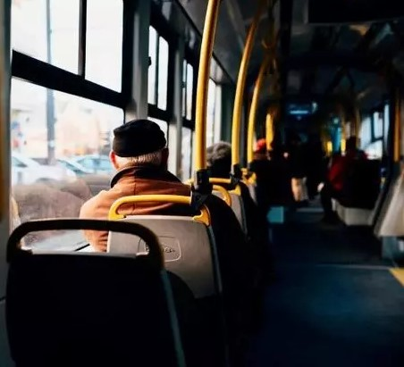
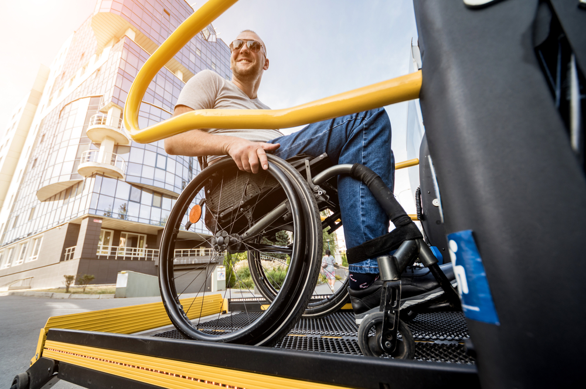
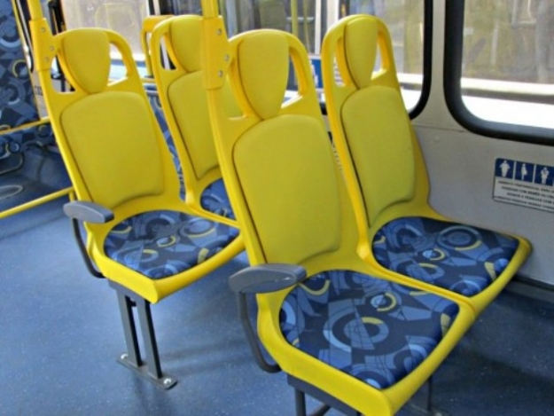

O direito ao transporte e à mobilidade da pessoa com deficiência ou com mobilidade reduzida em igualdade de oportunidades com as demais pessoas, por meio da eliminação de todos os obstáculos.
Garantimos a disponibilidade de veículos adaptados, com elevadores para cadeiras de rodas, espaços reservados, etc. Estamos comprometidos em proporcionar uma experiência de viagem inclusiva e acessível para todos.
Garantimos a presença de informações em braile nos ônibus, além de treinamento especializado para nossos motoristas. Estamos comprometidos em proporcionar uma viagem inclusiva e acessível para todos os passageiros, incluindo os cegos. Além disso, a infraestrutura das estações deve ser projetada para facilitar a mobilidade e a segurança das pessoas com deficiência visual. Pisos táteis direcionais e de alerta podem ajudar a guiar os deficientes visuais nas plataformas e nas áreas de embarque e desembarque. Corrimãos táteis e elevadores acessíveis são essenciais para permitir que todos tenham acesso às diferentes áreas do transporte público.
Os veículos possuem espaços reservados e adequados para cadeiras de rodas, com rampas ou elevadores de acesso. Isso permite que os cadeirantes embarquem e desembarquem com segurança e facilidade. Além disso, as estações e pontos de ônibus são equipados com rampas de acesso, calçadas rebaixadas e elevadores, para que os cadeirantes possam se locomover de forma autônoma. Os funcionários do transporte público devem ser treinados para prestar assistência adequada aos passageiros com deficiência física, garantindo que eles sejam tratados com respeito e sensibilidade.
Os assentos preferenciais nos transportes públicos é uma medida fundamental para garantir o conforto e a inclusão de pessoas com necessidades especiais, como idosos, gestantes, pessoas com deficiência ou mobilidade reduzida. Esses assentos, na SPTrans, são designados para permitir que esses grupos tenham prioridade e acesso adequado durante suas viagens. Os assentos preferenciais são claramente identificados e localizados de forma estratégica nos veículos e estações.